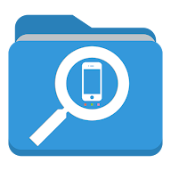

File Manager - File Explorer
Get it on Google PlayAbout
File Manager(File Explorer) developed by AAA Technology aims to be the best one on Google Play by keeping it light, free and simple. It offers every Android user a fantastic experience when managing their files.
By default, File Manager allows you to copy, move, rename, delete or share files to and from any of your storages.
Top features of File Manager
✴ Easy file browsing: Browse files easily by category right from File Manager’s home screen: images, videos, music, applications, downloaded, and favorites.
✴ Fully featured: Cut, copy, paste, delete, compress, decompress, search and more.
✴ Clean memory: Speed ups your mobile process by clearing unwanted process from RAM.
✴ Wi-Fi File transfer: Connect with your PC by wireless, edit your mobile files using FTP.
✴ Super convenient: View files by type (image, audio, video, recent, download etc.)
✴ Media File Access: Play Audio files and video from app
✴ Material design: With clean UI and ease of animations
✴ Multiple protocols: Supports file transfers using FTP, FTPS, SFTP, WebDAV and LAN/SMB, stream media from LAN/SMB/FTP/WebDAV/Cloud without downloading.
✴ Root Access: Check your mobile is rooted and able to access root files